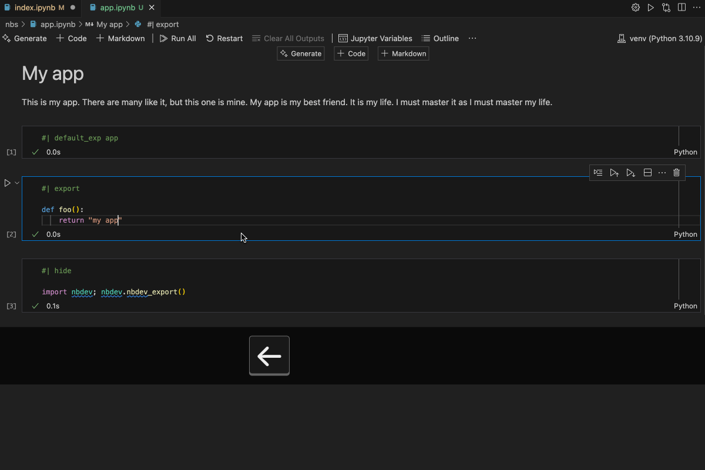

nbdev dev flow: recs and gotchas
nbdev “Hello world”
Here is what “Hello world” notebook looks like (app.ipynb):
# My app
This is my app. There are many like it, but this one is mine. My app is my best friend. It is my life. I must master it as I must master my life.#| default_exp app#| export
def foo(): pass#| hide
import nbdev; nbdev.nbdev_export()Basic recipe for happiness with nbdev
The easiest way to achieve happiness and peace of mind while using nbdev is to Save + Restart + Run All. This will make sure that the outputs are up to date and you are pulling fresh versions of other modules in your package. Bonus points for using a keyboard shortcut to streamline the process. Here’s an example with Restart Kernel and Rerun all mapped to Cmd + Shift + R

Remember: nbdev_export reads notebooks from the file system - make sure you save before you export
Guarding against shipping broken lib
If you are not careful with #| export, you might ship broken code. Let’s say your notebook has these 2 code cells
def bar(): return "bar"and
#| export
def foo(): return bar()You can test your function foo in the same notebook by invoking it
foo()and it returns "bar" as expected. nbdev_export runs OK. If we now inspect output python module, we will see smth strange:
# AUTOGENERATED! DO NOT EDIT! File to edit: ../nbs/foo.ipynb.
# %% auto 0
__all__ = ['foo']
# %% ../nbs/foo.ipynb 2
def foo():
return bar()foo is there but bar is not. it’s because we did not export bar using |# export annotation. This can get pretty frustrating especially if you are just starting with nbdev. An easy way to guard against shipping this broken code to production is to integrate pyflakes in your CI workflow:
pyflakes ./output_dirThis will produce the following error report:
./output_dir/foo.py:8:12: undefined name 'bar'We can also add a custom helper to run these checks automatically in your dev flow:
#| export
import pyflakes.api, nbdev.config
class AggressiveReporter:
def unexpectedError(self, filename, msg): raise Exception(f"({filename}) Unexpected error: {msg}")
def syntaxError(self, filename, msg, lineno, offset, text): raise Exception(f"({filename}:{lineno}:{offset}) Syntax error: {msg} {text}")
def flake(self, message): raise Exception(f"{message}")
def check(): pyflakes.api.checkRecursive([nbdev.config.get_config().lib_path], AggressiveReporter())Update each of your nb footer with
#| hide
import nbdev
from nbdev_gymnastics.check import check
nbdev.nbdev_export()
check()Gotchas
Empty notebook
Let’s say you are working on your app.ipynb. Meanwhile, you add another module by creating foo.ipynb and leave it empty.
When rerunning all your cells inside app.ipynb, you get a strange error along these lines:
354 except StopIteration as err:–> 355 raise JSONDecodeError(“Expecting value”, s, err.value) from None
It might have nothing to do with app.ipynb but actually point to the issue with foo.ipynb being empty. The following code block at the very bottom of app.ipynb runs nbdev_export that processes ALL the notebooks in your project and NOT just the current one:
import nbdev; nbdev.nbdev_export()
Comment from Jeremy Howard regarding pyflakes usage